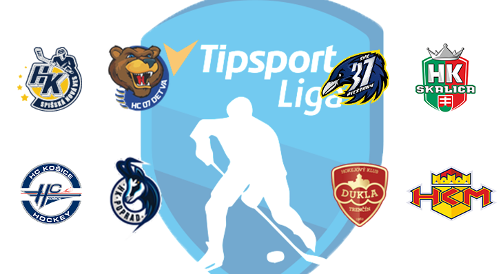
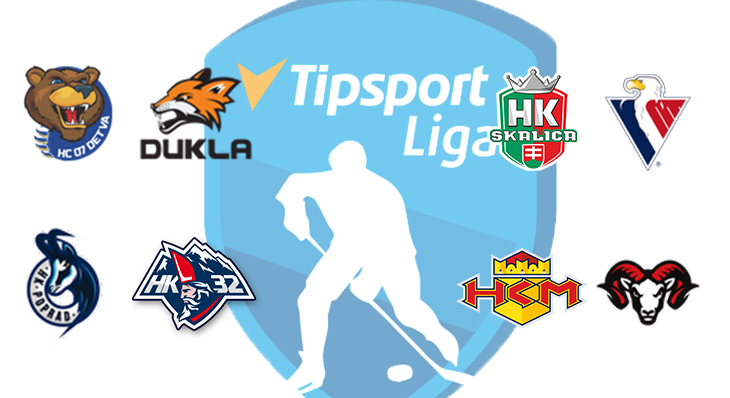
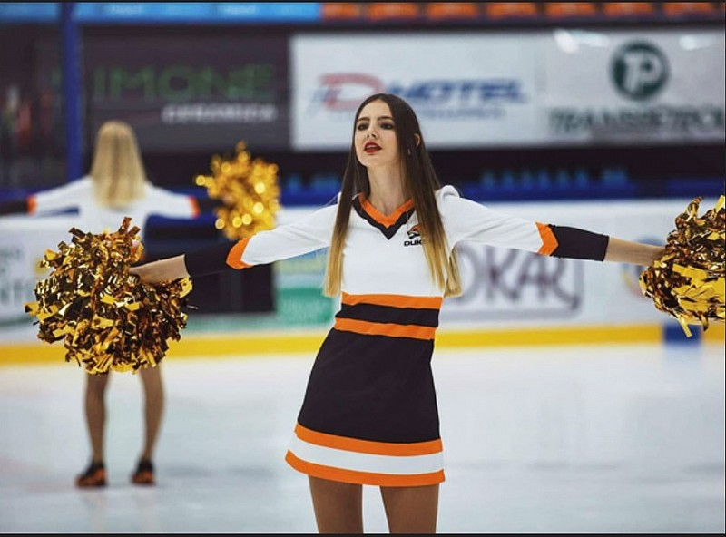
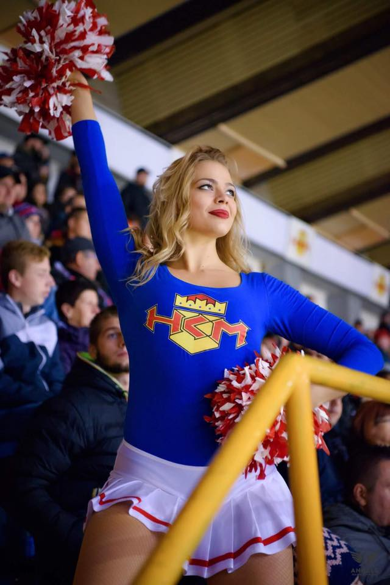

Novinky zo sveta turnaja
UPOZORNENIE
- Od druhej sezóny budeme používať novú stránku! kde už nájdete aj nový rozpis zápasov prosím pozrite si ho a začnite plánovať!
Link tu: https://crisp69.github.io/Tipsportliga/
SEMIFINÁLE JE TU!

- Tento víkend nám odštartovalo semifinále, kde po týždňovej pauze sa k svojím zápasom konečne dostali aj Košice, Spišská, Piešťany či Trenčín, ktorí si vybojovali v základnej časti semifinálove postupové priečky.
ŠTVRŤFINÁLE JE ZA NAMI

- V 7. a 8.týždni turnaja sa odohralo štvrťfinále, v ktorých žiaľ padli aj kontumačné výhry, čo nikoho neteší. Ale samozrejme niektoré zápasy sa odohrali. Slovan sa snažil zabojovať v štvrťfinále čo najviac, keďže v základnej časti sa mu nedarilo. Slovanu sa skoro podarilo zaskočiť Skalicu. Séria bola vyrovnaná a pred zápasom sa nedalo povedať jednozačne, kto z nich si uchmatne 3 body. V tretom zápase si však Skalica viedla lepšie a udržala si výherné konto a postúpila do semifinále po stave sérií 2:1. Slovan tak z play-off vypadáva už vo štvrťfinále. Tak isto to vyzeralo aj v druhom zápase, ktorý sa odohral vo východnej časti pavúka. Rozbehnuté Michalovce natrafili na čierneho koňa turnaja Detvu. Michalovce v prvom zápase ukázali dominanciu. Detva sa nedala zastrašiť a svoj domáci zápas vyhrala a dorovnala stav série na 1:1. Po dlhšej týždňovej pauze, kde sa zápas neodohral podľa plánu v stredu ale v sobotu sa Detva vrátila späť do Michaloviec, kde sa malo rozhodnúť o postupe. Michalovce domáci rozhodujúci zápas nezvládli a tak Detva postúpila do semifinále a stále je v hre o umiestnenie. Naopak Michalovce z play-off vypadli. Taktiež vypadol Liptovský Mikuláš po neprijatí výzvy a Banská Bystrica, ktorá ignorovala správy aj súperové výzvy.
Šiesty víkend - KONIEC ZÁKLADNEJ ČASTI
Review 12.kolo - výsledky + článok- Posledné dva kolá základnej časti sú tu. Michalovce pred play-off chytili neskutočnú formu. Výmena brankárskej jednotky tímu značne pomohla. Zápas Spišská Piešťany sa neodohral. Dohrávka naplánovaná na 1.7.2020 Streda. Trenčín si v 12.kole poistil semifinálovú priečku.

Piaty víkend
Review 11.kolo - výsledky + článokReview 10.kolo - výsledky + článok
- Pozrite si ako dopadlo 10. a 11.kolo. Taktiež sa blíži play-off. Možno je čas poobzerať sa po nejakých posilách? Alebo svojmu momentálnemu družstvu veríte a nepotrebujete žiadneho strelca do útoku či siláka do obrany, ktorý by chránil brankára pred svojími súpermi?

Štvrtý víkend je za nami
- 8. a 9.kolo sa odohralo vo štvrtom hracom víkende. Žiaľ články z týchto kôl kvôli, časovej tiesni nebudú. Tak vám aspoň prinášam menšie interview s ďalším manažérom a tým je PedroSK, ktorý hraje HA už 14 rokov. V článku sa dozvieme niečo málo o ambíciach jeho klubu HK Dukla Trenčín v turnaji. Ale pýtali sme sa aj na nadchádzajúce Play-off. Interview 🆕 /manažér PedroSK - HK Dukla Trenčín

Druhý víkend je za nami
Review 5.kolo - výsledky + článokReview 4.kolo - výsledky + článok
- Po 5.kole vám taktiež prinášam informácie zo zákulisia HC Košice a vyjadrenie ich manažéra tomsona k posledným zápasom ligy a aké zmeny HC Košice čakajú. Detvu počas víkendu oslabili zranenia hráčov a zápas medzi Spišskou a Martinom v 5.kole sa neodohral z technických príčin. Dohravka je naplánovaná na stredu 3.6.2020. Spišská tak stále môže útočiť na prvú priečku v tabuľke a zosadiť z nej Poprad. Ako dopadli jednotlivé kolá sa dočítate v sekcii novinky - #.kolo. Odkaz na rozhovor nájdete tu:

Prvý víkend je za nami
Review 3.kolo - výsledky + článokReview 2.kolo - výsledky + článok
Review 1.kolo - výsledky + článok